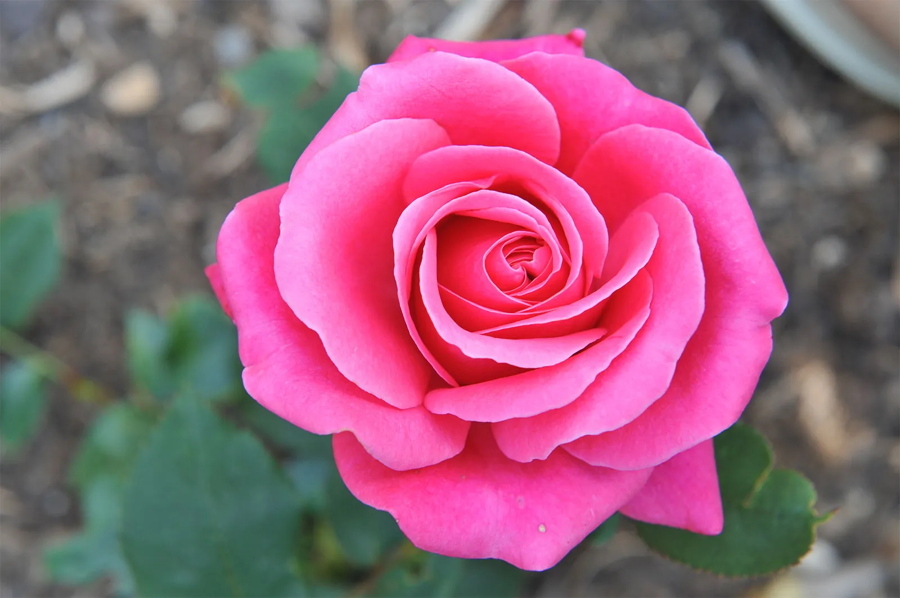
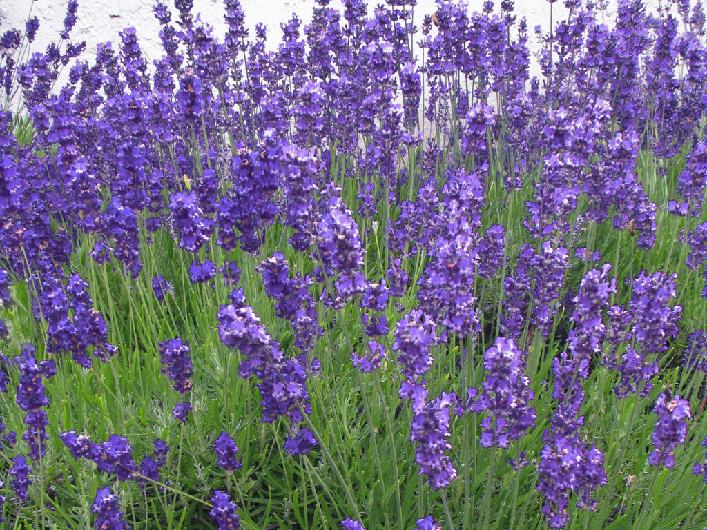
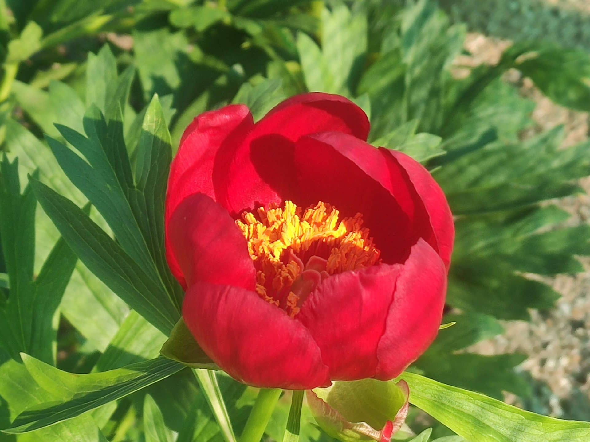

Троянда по праву вважається королевою будь-якого саду. Ця багаторічна рослина налічує тисячі сортів, що відрізняються формою пелюсток та інтенсивністю аромату. Вона символізує красу та витонченість, вимагаючи при цьому ретельного догляду та родючого ґрунту для свого розкішного цвітіння протягом усього літа.
↑ Повернутися до змісту
Лаванда — це вічнозелений багаторічний чагарник, який цінується за свій неповторний заспокійливий аромат та елегантні фіолетові суцвіття. Вона ідеально підходить для створення бордюрів та альпійських гірок, адже є досить невибагливою до поливу та обожнює сонячні, відкриті простори.
↑ Повернутися до змісту
Півонії — одні з найулюбленіших весняних багаторічників. Їхні величезні, махрові квіти можуть досягати 20 сантиметрів у діаметрі. Рослина має міцне коріння, що дозволяє їй рости на одному місці понад 50 років. Це символ достатку та процвітання, який наповнює сад солодким ароматом наприкінці травня.
↑ Повернутися до змісту